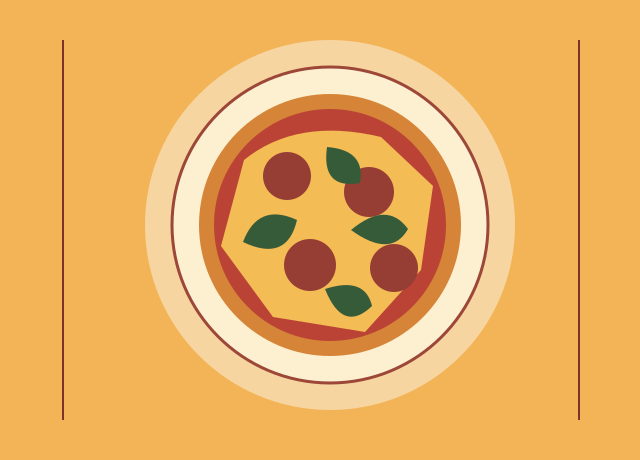

Koncepcja włoskiej trattorii
Pizza z pieca, makarony i coś słodkiego na koniec. Zobacz menu przed otwarciem.

Planowane otwarcie · 16 stycznia 2027 o 12:00
pizza wege
Passata, mozzarella, bazylia
pizza
Pomidory, mozzarella, pikantne salami
makaron wege
Masło ziołowe, boczniak, pietruszka
makaron
Pappardelle, wolno duszony sos pomidorowy
deser
Wanilia i sos malinowy
deser wege
Cytryny, cukier, świeża mięta
12:00–21:00
12:00–22:00
Zamknięte
demo – formularz nie wysyła danych